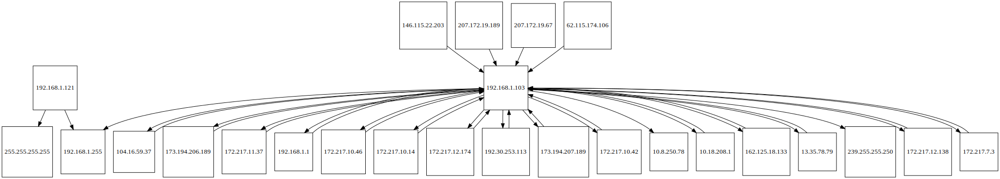

capmap
Network Graph:

Statistics:
Conversations
| Conversations |
# of Times |
{% for key, value in packets.items() %}
| {{ key }} |
{{ value }} |
{% for line in lengths %}
{{ line }} |
{% endfor %}
{% endfor %}
DNS Queries
| Source IP |
Source Port |
DNS Query |
Destination IP |
Destination Port |
{% for line in dns %}
| {{ line[0] }} |
{{ line[1] }} |
{{ line[2] }} |
{{ line[3] }} |
{{ line[4] }} |
{% endfor %}
ARP Requests and Replies
Request: 1 / Reply: 2
| Source IP |
Destination IP |
Opcode |
{% for line in arp %}
| {{ line[0] }} |
{{ line[1] }} |
{{ line[2] }} |
{% endfor %}
Ports
| Port Number |
# Times Used |
{% for key, value in ports.items() %}
| {{ key }} |
{{ value }} |
{% endfor %}
Transport Protocols
{% for key, value in trans.items() %}
{{ key }} Packets Transmitted: {{ value }}
{% endfor %}